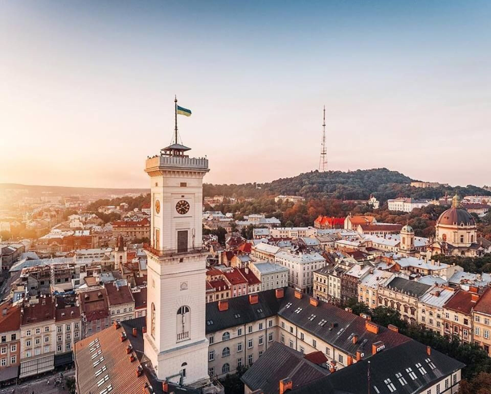

Місто, в якому я живу

Львів для мене — найкраще місто. Я живу тут, тому це не просто місце зі списку, а частина мого повсякденного життя.
Чому я обрав Львів
Мене приваблює старовинна атмосфера міста. Історична архітектура та вулиці створюють відчуття, що минуле тут залишається поруч із сучасним життям.
Що варто побачити
- Площу Ринок та історичний центр.
- Львівську ратушу.
- Архітектурні пам’ятки старого міста.
Моя оцінка
Львів посідає перше місце в моєму списку, бо це місто, у якому я живу й особливо ціную його старовинну атмосферу.